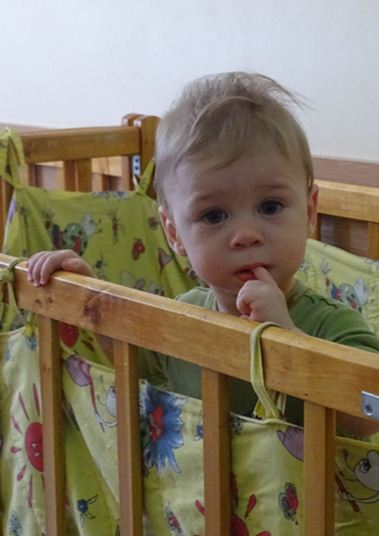
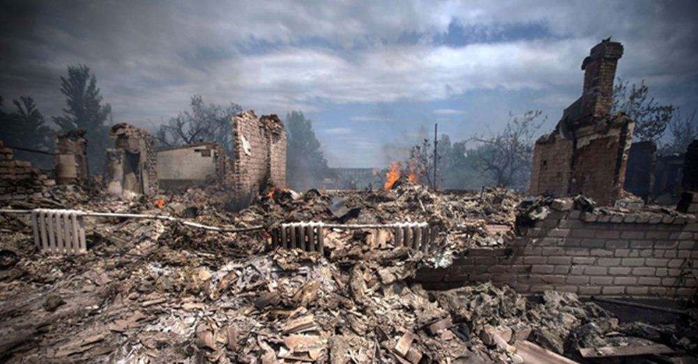
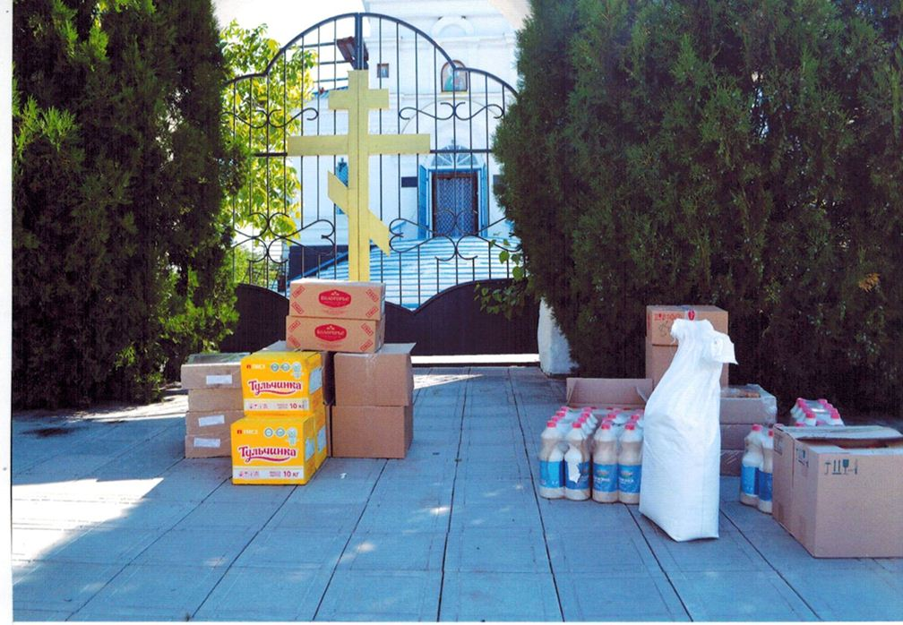
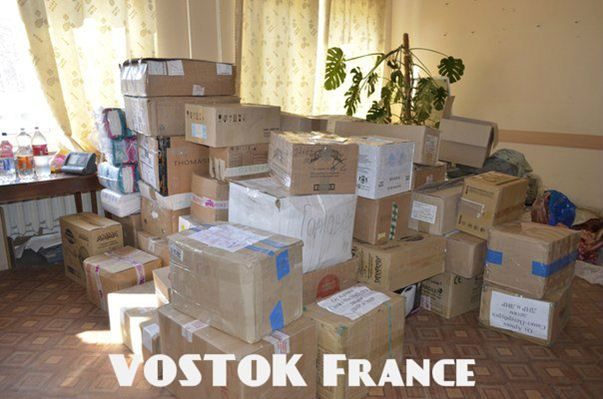
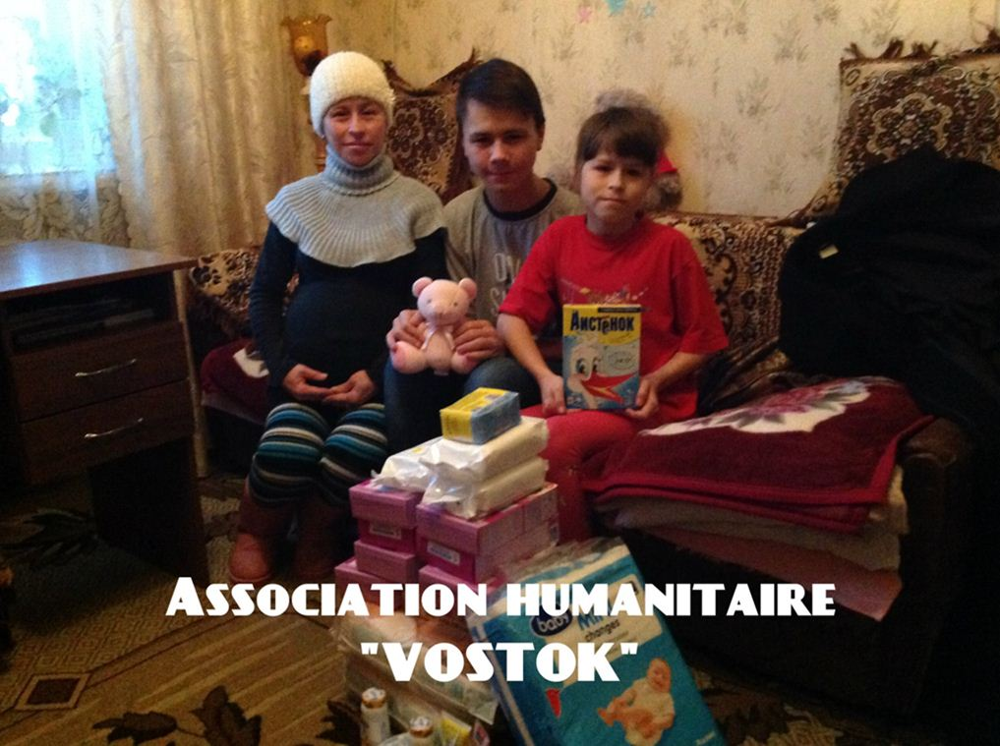
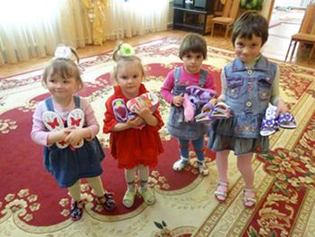
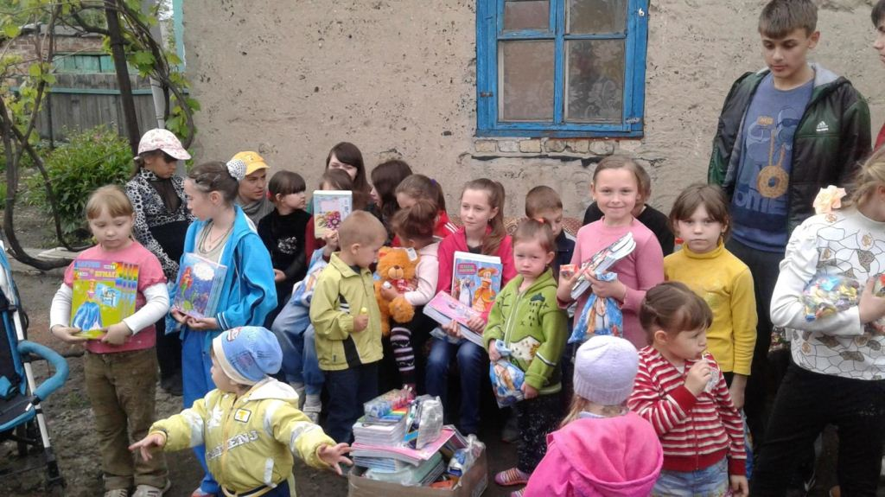
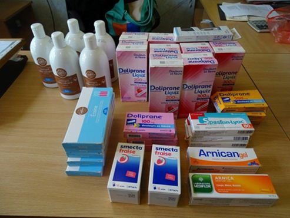
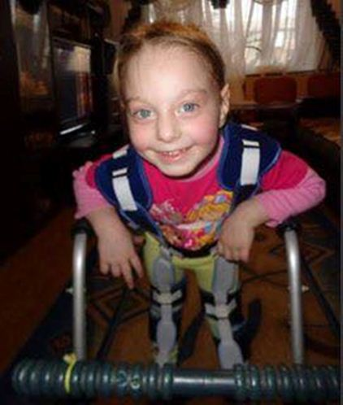

Depuis deux ans et demi la guerre ravage la région du Donbass.
Depuis deux ans et demi sa population vit dans le blocus économique et financier organisé par le gouvernement ukrainien.
Ce blocus, pas moins que les bombes, détruit la vie des gens par le manque de médicaments, de produits d'hygiène et de produits d'alimentation. Les conditions de vie sont dégradées : le manque du gaz, les coupures d'électricité, d'eau et de téléphone sont fréquentes. La qualité de l’eau potable est médiocre, car les stations de traitement d'eau sont régulièrement bombardées et détériorées. Des maisons et immeubles sont démolis réduisant des familles entières à vivre dans les caves, les abris....
La représentante de l'UNICEF en Ukraine, Giovanna Barberis, en février 2015 poussait un cri d'alarme et appelait en aide la communauté internationale face à la situation dramatique à Donetsk : « Jamais nous n'aurions imaginé une situation aussi catastrophique. Nous sommes dans un État en guerre », disait-elle dans un article, seul dans ce genre, publié dans Paris Match. A cette époque elle estimait l’aide nécessaire à 32,4 millions de dollars.
Un an et demi après les accords de Minsk la situation au Donbass reste toujours dramatique. Le blocus durcit, et, avec lui, la vie de la population civile se détériore de plus en plus. Les tirs réguliers de l'armée ukrainienne empêchent le rétablissement de la vie normale.
Les premières victimes de cette guerre atroce, les plus fragiles et les plus vulnérables, sont bien sûr les enfants, les malades, les handicapés et les personnes âgées. Non seulement ils sont privés de soins faute de médicaments, de médecins, d’hôpitaux, cibles préférées des tirs et des bombardements mais ils sont privés aussi de l'alimentation spécifique, tels les vitamines et les probiotiques, et tout simplement d’une alimentation saine et variée comprenant fruits et légumes...
La présence des grandes ONG est invisible. A contrario, il existe un certain nombre d’ associations et de Fondations (l'Espagne, l'Italie, la Russie, la France, le Luxembourg, la Suisse, l'Ukraine – pour celles que nous connaissons) ainsi que des particuliers (russes, anglais, français, suisses, belges, ukrainiens) qui œuvrent sur le terrain de l'aide humanitaire au Donbass. Mais les besoins sont énormes.
L'Association « Vostok France – Solidarité Donbass » apporte de l'aide humanitaire au Donbass et aux réfugiés de cette région depuis deux ans.
« Vostok France – Solidarité Donbass » est née durant le terrible été 2014. Elle est née des larmes et du sang de peuple du Donbass. Elle doit sa naissance à six personnes d'origines ukrainienne et russe qui n'ont pas voulu rester des témoins indifférents à la tragédie humaine, se déroulant en plein cœur de l'Europe dans le déni, le mépris et l'oubli de cette même Europe.
Aujourd'hui l'Association « Vostok France – Solidarité Donbass » compte vingt adhérents : des Français en grande partie, mais également des Suisses et des Luxembourgeois.
L'Association reçoit les dons du monde entier : de France, d'Australie, d'Angleterre, de Belgique, du Canada, d'Italie, de Finlande, de Suisse, du Luxembourg, des États-Unis, d'Espagne, d'Allemagne et d'Indonésie.
Elle est présente sur tout le territoire du Donbass: Altchevsk, Stakhanov, Donetsk, Enakievo, Ouglegorsk, Snejnoié, Gorlovka, Makeevka, Khartzysk et les villages sur la ligne de front – Spartak, Zaitstevo, Staromikhailovka. Telle est la géographie des actions de l'Association.
Le noyau actif est composé de cinq personnes qui accomplissent la principale charge de travail :
la collecte de vêtements, la collecte et l'achat de médicaments et de produits d'hygiène, l'envoi de colis,
l'organisation d’événements et de manifestations de bienfaisance,
l'édition de lettres d'information,
la recherche de partenaires,
les missions dans le Donbass.
En deux ans d'existence l'Association a envoyé trois tonnes de vêtements, 200 kg de nourriture, 200 kg de médicaments et redistribué 25 000 euros d'aide pour l'achat de produits d'alimentation et d'hygiènes, de médicaments, de fourniture du bureau, de soins, de réparations des locaux des écoles et des hôpitaux.
Les membres de l'Association ont effectué trois missions dans la région du Donbass : décembre 2014 – Lougansk, Pervomaisk, Brianka ; novembre 2015 – Donetsk et Enakievo ; mai et juin 2016 - Spartak, Zaitstevo, Staromikhailovka, Altchevsk, Stakhanov, Snejnoie, Donetsk.
Au cours de ces missions l'Association apporte de l'aide appropriée sur place, détermine les besoins et établit le partenariat avec des acteurs locaux. Depuis l'été 2015 l'Association a son représentant officiel à Donetsk. A Altchevsk l'Association travaille avec le Centre Social Territorial et, désormais, avec le Centre de Réhabilitation pour les enfants handicapés. La Fondation « Prada Hospis » est partenaire de l'Association à Stakhanov. A Snejnoie l'église Sviato-Dmitrievsky nous soutient pour distribuer de l'aide dans les villages sur la ligne du front.
L'Association concentre son attention, tout d'abord, sur les enfants : établissements pour les enfants handicapés, hôpitaux et services médicalisés pour les enfants, aide individuelle et ponctuelle aux enfants malades et blessés. La Maison pour les enfants-orphelins séropositifs à Makeevka, les orphelinats d’Enakievo et de Snejnoié, les écoles-internats pour les enfants handicapés à Donetsk et à Enakievo, l'orphelinat d'Ouglegorsk, le service pour les enfants malades de tuberculose à Donetsk.
Lors de sa dernière mission en juin 2016 les membres de l'Association ont visité le service de cardio-chirurgie infantile de l’Institut de Chirurgie Réparatrice d’Urgence « Goussak » de Donetsk dirigé par le Dr. Vladislav Konov, qui fait face à une pénurie de spécialistes. Avant la guerre ce service effectuait 200 opérations par an et actuellement il ne peut opérer que les enfants pesant plus de 40 kg. Il manque des médicaments et du matériel d'opération et de diagnostic. Le service a besoin de finir la construction du local pour la tomographie1 de la dernière génération dont le fonctionnement faciliterait grandement le diagnostic. A la veille de l'hiver, sans abri sûr, l'appareil risque de joindre le cimetière d'équipements abandonnés.
Le service gynécologique et obstétrique de l’hôpital Kalinine, dirigé par le Dr. Valentina Sviridova, accueille les patientes provenant de toute la région de Donetsk et il prend en charge les nourrissons pour des thérapies intensives. Ce service a besoin de médicaments dont des probiotiques, de couches et d’aliments pour enfants.
Les informations recueillis lors des missions nous permettent de communiquer sur la situation humanitaire désastreuse de la population civile, et en particulier, des enfants, de la région du Donbass. Les huit bulletins d'information, édités depuis la création de l'Association, relatent régulièrement nos actions et nos missions. Ils contribuent à la diffusion de l'information et à la recherche des donateurs.
Une autre source de communication et de collecte de moyens financiers est l'organisation d’événements ou des manifestations, tels que les concerts, les soirées caritatives, la vente de produits artisanaux. Le but est de créer un échange et une synergie entre les participants dans une atmosphère conviviale et décontractée.
La soirée – débat caritative « Ensemble, aidons le peuple du Donbass » qui a eu lieu le 23 janvier 2016 à Genève, a contribué au financement de notre troisième mission au Donbass en mai-juin 2016.
 Aide aux enfants handicapés du centre d'Altchevsk au DonbassActuellement, l'Association travaille sur un nouveau projet de soirée-gala caritative et cherche les sponsors ou les mécènes susceptibles de soutenir et de financer ce projet. Tous les fonds obtenus durant cette manifestation seront distribués aux établissements et aux services hospitaliers pour les enfants.
Dans son travail VFSD s'appuie sur son réseau associatif français et international mais aussi sur les particuliers, qui apportent leur soutien et leur aide. L'Association est fière de compter parmi ces membres actifs Nikola Mirkovic, l'auteur du livre « Le Martyre du Kosovo » et fondateur de l'Association « Solidarité Kosovo ». Le soutien de Xavier Moreau, le politologue, l'historien et l'auteur du livre « L'Ukraine : Pourquoi la France s'est trompé » et sa participation dans les missions ont contribué à la connaissance de l'Association et de ces actions.
Aujourd'hui « Vostok France - Solidarité Donbass » se projette dans l'avenir : même si demain les combats s'arrêtaient définitivement au Donbass, il y aura un travail énorme pour que cette terre puisse soigner ses plaies et celles de ses enfants. Les demandes d'aide nous arrivent tous les jours – à partir du mois d'octobre nous ajouterons sur notre liste Pervomaïsk… Comment aider toutes les personnes qui ont besoin de nous ?
L'Association « Vostok France - Solidarité Donbass » continue de répondre à tous les appels en provenance du Donbass, sans jamais perdre de l'espoir.....
E.K.
1La tomographie est une technique qui consiste à reconstruire le volume d’un objet (le corps humain dans le cas de l’imagerie médicale) à partir d’une série de mesures déportées à l’extérieur de l’objet.. Le résultat est une reconstruction de certaines propriétés de l’intérieur de l’objet, selon le type d’information que fournissent les capteurs.